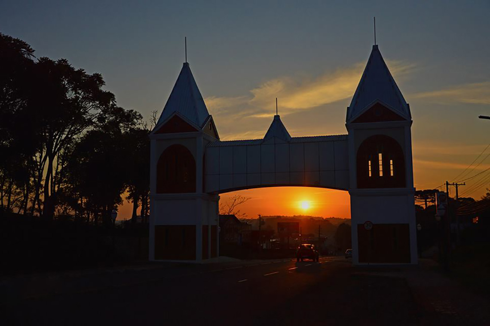
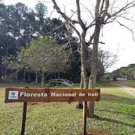

Iratop
Por: Gabriel Emanuel

A mescla das diferentes culturas torna a cidade de Irati uma das mais interessantes do Sul do País. Surpreende por sua condição privilegiada, com densas florestas de araucária, clima temperado, rios caudalosos, cultura rica e diversificada e paisagens únicas.
Irati é um município brasileiro do estado do Paraná, localizada na região centro sul do estado.
Passam pelo município a BR-277, que corta todo o estado de leste a oeste (no leste: Porto de Paranaguá e a oeste: Foz do Iguaçu) e a BR-153, que corta o pais de norte a sul
Irati está a cerca de 156 km de Curitiba, na região Turística Terra dos Pinheirais – Centro-Sul do Paraná. A população é formada por diferentes etnias, especialmente poloneses e ucranianos que buscam manter costumes e tradições de seus ascendentes, o que torna a cidade bastante agradável. A população estimada, segundo o IBGE, é de 60.357 habitantes.
O município teve origem na Vila de Covalzinho, quando os trilhos da estrada de ferro São Paulo/Rio Grande do Sul passaram pelo local. Foi ali instalada a estação ferroviária que recebeu o nome de Iraty. O nome Covalzinho foi lentamente esquecido, ficando a vila conhecida apenas pelo nome da estação ferroviária. Irati vem do indígena tupi, e significa Rio de Mel. As terras onde se localiza pertenciam aos índios. O mel, daquela época até hoje, tem profunda força local histórica e cultural, além de significativa produção.
Irati faz divisa ao norte com Imbituva e Prudentópolis, ao Sul com Rio Azul e Rebouças, no leste com Fernandes Pinheiro e oeste com Inácio Martins.
Irati ainda é divido em Distrito Sede, Distrito de Gonçalves Júnior, Distrito do Itapará e Distrito do Guamirim.
A região de Irati conta com inúmeros locais onde a natureza prevalece e mostra toda a sua beleza. Desde a área urbana do município, aos mais distantes recantos naturais, são inúmeras as QUEDAS D'ÁGUA que enchem os olhos daqueles que as visitam não só pela primeira vez. Um panorama ímpar e que, se por um lado, ainda não explorado turisticamente em todo o seu potencial, releva, contudo o aspecto de preservação do meio ambiente, um bem cada vez mais importante no contexto atual, e em que a natureza só tem a agradecer.
QUEDAS D'ÁGUA (conheça mais)
Cachoeira do Pinho

Localizada a 18km do centro da cidade
Recanto Rubens Dallegrave (ou Cachoeira Filus)

Localizada na área urbana da cidade
Cachoeira do Itapará

Localizada a 45km do centro da cidade
Cachoeira do Cadeadinho

Localizada a 36km do centro da cidade
Cachoeira do Faxinal dos Antônios

Localizada a 44km do centro da cidade
Cachoeira da Vista Alegre

Localizada a 43km do centro da cidade
PATRIMÔNIOS NATURAIS (conheça mais)
Floresta Nacional de Irati - FLONA
Acesso: pela BR 277 e mais 5Km sem asfalto ou pela BR 153 e mais 1Km sem pavimentação. Foi criada pela portaria nº 559, de 25/10/1968. Localiza-se no município de Fernandes Pinheiro. Possui no total 3.495ha. de área. A FLONA tem uma maior concentração de mata nativa de Araucária. Uma parte da área – 1.308,71ha. - é reflorestada com araucárias, pinus e eucalipto. Tem como principais espécies nativas a araucária, imbuia, erva-mate, bracatinga, cedro e carvalho. Em relação à fauna encontra-se a Gralha Azul, Sabiá, Tiriva, Periquito, Veado, Macaco-Prego, Paca, Cotia, Capivara, entre outros. Nas áreas reflorestadas, possui um sistema de exploração de madeira em forma de manejo, viveiro de mudas florestais e ornamentais, apicultura e exploração de erva-mate. É permitida visitação mediante comunicado prévio em caso de excursões. Horário de atendimento: das 8:00h às 11:30h e das 13:30h às 17:30.
Localizada a 18km do centro da cidade
Recanto Rubens Dallegrave (ou Cachoeira Filus)
Localizada na área urbana da cidade
Cachoeira do Itapará
Localizada a 45km do centro da cidade
Cachoeira do Cadeadinho
Localizada a 36km do centro da cidade
Cachoeira do Faxinal dos Antônios
Localizada a 44km do centro da cidade
Cachoeira da Vista Alegre
Localizada a 43km do centro da cidade
Seção Referências:
Textos:
► https://pt.wikipedia.org/wiki/Irati_(Paran%C3%A1) (acesso em 9 de dezembro de 2021 - adaptado)
► https://irati.pr.gov.br/pagina/1_Historia.html (acesso em 9 de dezembro de 2021 - adaptado)
Imagens
► https://s2.glbimg.com/yZgZkpD6_JDEJNqhnMFurs0hjRQ=/0x0:960x560/984x0/smart/filters:strip_icc()/i.s3.glbimg.com/ v1/AUTH_59edd422c0c84a879bd37670ae4f538a/internal_photos/bs/2018/d/3/L2QnsoSyWZCiK4Xs1iPA/vista-panoramica-de-irat i-pr.jpg (acesso em 9 de dezembro de 2021)
► https://grupopitangueiras.com.br/wp-content/uploads/2013/10/irati.jpg (acesso em 9 de dezembro de 2021)
► http://metropolia.org.br/wp-content/uploads/2015/02/1.5.6-1-Irati.jpg (acesso em 9 de dezembro de 2021)
► https://encrypted-tbn0.gstatic.com/images?q=tbn:ANd9GcSoDfH77dE8vNGl6anOqB7Xh_NSI4f71eRboQ&usqp=CAU
(acesso em 9 de dezembro de 2021)
► https://upload.wikimedia.org/wikipedia/commons/thumb/6/60/Parana_Municip_Irati.svg/300px-Parana_Municip_Irati.svg. png (acesso em 9 de dezembro de 2021)
► https://4.bp.blogspot.com/-6XTS4UAWR2s/VD75gaBq38I/AAAAAAAABhI/sw_oHhkwodY/s1600/Haroldo%2BGuamirim.JPG (acesso em 9 de dezembro de 2021)
► https://www.researchgate.net/figure/FIGURA-1-Localizacao-geografica-do-municipio-de-Irati-PR-Figure-1-Geographic-loca lization_fig1_321285703 (acesso em 15 de dezembro de 2021)
► https://www.achetudoeregiao.com.br/pr/irati/turismo.htm (acesso em 15 de dezembro de 2021)
► https://avaazdo.s3.amazonaws.com/original_5c8a8f75d9518.jpeg (acesso em 15 de dezembro de 2021)
► https://www.viajeparana.com/sites/viaje-parana/arquivos_restritos/files/imagem/2019-05/portal_-_osmair.jpg
(acesso em 15 de dezembro de 2021)
► https://irati.pr.gov.br//uploads/wysiwyg//25a6cfc.jpg (acesso em 15 de dezembro de 2021)
► https://www.researchgate.net/profile/Nicolas-Floriani/publication/263010838/figure/fig6/AS:668767340208133@153645 7967391/ (acesso em 16 de dezembro de 2021)
{kind=link}
► https://i.ytimg.com/vi/ooIIpt-rIzE/maxresdefault.jpg (acesso em 16 de dezembro de 2021)
{kind=link}
► https://i.ytimg.com/vi/63u_pMH0N7w/maxresdefault.jpg (acesso em 16 de dezembro de 2021)
{kind=link}
► https://www.achetudoeregiao.com.br/pr/irati/gifs/cachoeiravista.jpg (acesso em 16 de dezembro de 2021)
{kind=link}
Última alteração em: 16/12/2021, às 16:05, horário oficial de Brasília